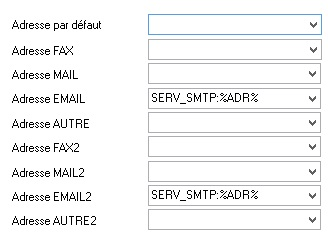

Pour l'envoi d'un message électronique par programme, Harmony utilise habituellement l'interface MAPI (Interface standard de Programmation d'Applications de Messagerie). Le destinataire est un "serveur" Mapi (Outlook Express, Outlook, ...), qui stocke le message dans une base de données et l'émet (soit directement vers un fournisseur d'accès, soit par l'intermédiaire du service de messagerie Microsoft Exchange Server). Un inconvénient à cette méthode est l'obligation d'ouvrir une session utilisateur et d'y lancer le programme Microsoft Outlook (Cf. rubrique Paramétrage de Outlook du livre Service Xbal).
Une alternative consiste à utiliser directement le protocole SMTP (Simple Mail Transfer Protocol).
SMTP est un protocole standard non propriétaire, utilisé pour transférer le courrier électronique vers les serveurs de messagerie et les boîtes aux lettres des destinataires, via l’Internet. Il va nous permettre ici d'envoyer des messages sans transiter par le client Outlook.
Principe de fonctionnement
Méthode utilisant un service SMTP (*).
Le principe consiste ici à "déposer" le mail dans un répertoire spécifique (c'est à dire à copier le fichier dans ce répertoire). Le service SMTP scrute ce répertoire en permanence ; dès qu'un nouveau fichier y est ajouté, il l'envoie au destinataire puis le supprime du répertoire. En cas d'erreur lors de l’envoi du mail, un rapport de non-remise est envoyé à l'expéditeur (des copies de ce rapport peuvent aussi être envoyées à d'autres destinataires). Si l'envoi du rapport de non-remise fait lui-même l'objet d'une erreur, le message est transféré dans un autre répertoire spécifique.
(*) Ce service n'est pas disponible sous système Vista (mais ce n'est pas nécessairement un problème réel car Vista tourne généralement sur un ordinateur "client" et on implémentera plutôt le service SMTP sur un ordinateur équipé d'un système "serveur").
Méthode sans service SMTP.
Ici, Divalto envoie directement le mail au destinataire, par l'intermédiaire d'une fonction du FrameWork dotnet.
Dans les deux cas, le mail peut être envoyé soit directement depuis le poste client léger (hors client léger Web), soit depuis le serveur d'applications.
Paramétrage "Divalto"
Le paramétrage "Divalto" s'effectue en deux temps dans DivaltoViewer : il faut demander que les envois d'e-mails fassent appel au protocole SMTP et configurer le client SMTP.
Utilisation du protocole SMTP.
Le bouton Format des adresses du choix Paramètres du menu Options de DivaltoViewer donne accès au choix du format d'adresse.
Pour l'adresse Email et/ou Email2, sélectionnez le choix "SERV_SMTP:%ADR%" du multi-choix :

Paramétrage du client avec utilisation d'un service SMTP
Le bouton Protocole SMTP (par le service smtp) du choix Paramètres du menu Options de DivaltoViewer donne accès aux paramètres suivants :
A destination du serveur Smtp.
Entrez ici le chemin d'accès au répertoire scruté par le serveur SMTP pour l'envoi des messages.
Exemple : //messagerie/pickup (où messagerie est le nom de l'ordinateur et pickup le nom de partage Windows du répertoire).
Le répertoire physique dépend du type d'installation. Il est local à l'ordinateur sur lequel s'exécute le service SMTP, se nomme Pickup et se situe sous le répertoire de base du serveur de messagerie (à titre indicatif : c:\Inetpub\Mailroot\PickUp ou c:\Program Files\Exchsrvr\Mailroot\vsi 1\PickUp avec Microsoft Exchange Server).
Identité ou Adresse internet à placer dans le champ 'De la part de ...'.
Texte que les destinataires des messages recevront comme venant "De la part de...".
En mode connecté, le service SMTP est sur le serveur distant Divalto.
Cochez cette case pour utiliser le service SMTP du serveur d'applications plutôt que celui du poste client local (en mode connecté uniquement).
Répertoires de copie des mails
Ce bouton donne accès aux paramètres :
Répertoire de copie des mails envoyés.
Répertoire de stockage d'une copie du fichier généré.
Répertoire des mails en erreur.
En cas d'erreur, répertoire de stockage d'une copie du fichier généré et d'un fichier de même nom mais d'extension .log contenant le texte de l'erreur produite.
Exemple : si l'envoi du fichier 201009031428380000PORT_JPT28r5eihy86zo6ajn.eml est sorti en erreur, on trouvera aussi dans le répertoire des mails en erreur un fichier 201009031428380000PORT_JPT28r5eihy86zo6ajn.log contenant le texte de l'erreur qui a empêché l'envoi du mail.
Répertoire du fichier Smtp.log.
Un fichier log contient, pour chaque message envoyé, la date et l'heure de l’envoi, l’objet du message, l’émetteur, le destinataire, un indicateur de succès ou d’erreur, le nom du fichier contenant le message.
Ne journaliser que les erreurs dans Smtp.log.
Option permettant de ne tracer que les erreurs dans le fichier log.
Paramètres avancés
Ce bouton donne accès aux paramètres :
Délai de latence entre deux envois de mails.
En cas d'envois consécutifs de mail en grand nombre (par exemple, envoi de flashs ou de messages dans le CRM Divalto), certains fournisseurs d'accès Smtp bloquent l'envoi, considérant qu'il s'agit de spams.
Ce paramètre permet d'espacer les envois (la valeur 15 permet par exemple de n'envoyer un mail que toutes les 15 secondes).
Attention : Ne fonctionne que pour un même programme Diva mais pas entre plusieurs programme Diva.
Extension du fichier temporaire à générer.
Harmony utilise l’extension .eml par défaut (Exchange 2010 exige notamment cette extension).
Dans les versions précédentes, Harmony générait des fichiers avec l’extension .txt. Vous pouvez utiliser ce paramètre pour reprendre cette extension .txt ou forcer toute autre extension.
Code page du corps du message par défaut.
Le code page indique le type de caractères utilisé dans Windows : en Europe du nord, c’est le type « windows-1252 ». Dans d’autres pays, ce code peut être différent (par exemple « windows-1257 » pour les pays de l’est). Il permet au destinataire du message de savoir comment interpréter les caractères spéciaux, notamment les caractères accentués.
Sinon, utiliser le texte suivant.
Code page à utiliser.
Autoriser l'envoi du corps du message au format HTML.
Autoriser l'envoi du corps du message au format RTF.
Le format du corps du message par défaut est le format HTML car ce format est reconnu par la plupart des récepteurs de mails.
Vous pouvez aussi sélectionner le format RTF (moins utilisé) ou texte simple (formats HTML et RTF décochés).
Le logiciel CRM de Divalto génère automatiquement le texte de certains messages (par exemple à l'occasion d'un e-mailing ou d'un événement). Pour cela, le programme interroge la DLL DhMapi pour savoir s'il peut générer du HTML, du RTF ou uniquement un texte simple. Selon la réponse de DhMapi, le programme générera un texte au format adapté.
Mettre le corps du message en base 64.
Par défaut, le corps du message est codé au format "base64".
On peut décocher cette case, auquel cas le corps du message sera envoyé au format "8bits" (mais alors, il faut que votre serveur SMTP accepte ce format).
Le format 8bits permet de voir le texte du message en clair dans le fichier généré alors que le format base64 ne le permet pas. On pourra utiliser le format 8bits lors de la mise au point de l'installation SMTP, afin de « voir » si le corps du message est bien transmis entre l’applicatif et le générateur du fichier destiné au serveur SMTP. Après cette vérification, il vaut mieux reprendre le format base64, qui garantit que le corps du message sera bien transmis au destinataire, sans altération par les couches de transport.
Mettre une commande To: par destinataire.
Certains fournisseurs d’accès interdisent plus d’une commande To: par mail. D’autres fournisseurs préfèrent plutôt avoir une commande To: pour chaque destinataire (certains autorisent les deux modes).
Par défaut, Harmony génère une seule commande To: avec les noms des destinataires sur plusieurs lignes.
Ce paramètre active l'envoi d'une commande To: par destinataire.
Découper le champ Sujet s'il est plus long que 78 caractères.
La norme actuelle permet l'envoi de 998 caractères maximum par ligne.
D’anciens produits limitent la lecture à 78 caractères par ligne.
Ce paramètre demande à Harmony de découper le sujet sur plusieurs lignes.
Remarque : Ceci peut faire perdre la notion de plusieurs espaces ou de tabulation entre les mots.
Ne pas mettre les balises de fin boundary_Alternate/Relative dans le fichier eml.
Pour ôter ces balises du fichier généré.
Paramétrage du client sans utilisation d'un service SMTP
Le bouton Protocole SMTP (par les fonctions smtp) du choix Paramètres du menu Options de DivaltoViewer donne accès aux paramètres suivants :
Envoyer le mail directement avec la fonction SMTP de Divalto.
Cochez cette case pour utiliser le mode "sans service SMTP".
En mode connecté, la fonction SMTP de Divalto est sur le serveur distant Divalto.
Cochez cette case pour que l'envoi se fasse à partir du serveur d'applications plutôt qu'à partir du poste client local -en mode connecté (*) uniquement-.
Si DivaltoViewer n’est pas connecté et si cette case est cochée, une tentative d'envoi du mail sera tout de même faite depuis le poste local.
(*) DivaltoViewer est en mode connecté lorsqu'on paramètre côté client un profil de connexion non local pour dialoguer avec un serveur d'applications Divalto. Il est alors possible de générer le mail localement ou depuis le serveur Divalto.
Remarque : Au besoin, un choix du menu de DivaltoViewer permet de se connecter (ou de se déconnecter) à un serveur d'applications Divalto.
Un accès au réseau Internet est nécessaire pour l'envoi du mail (sur le poste client en cas d'envoi local, sur le serveur d'applications en cas d'envoi depuis ce serveur).
Identité ou Adresse internet à placer dans le champ 'De la part de ...'.
Texte que les destinataires des messages recevront comme venant "De la part de...".
Envoyer le mail sans générer de fichier.
Si vous cochez cette case, aucun fichier n'est généré ni sauvegardé dans le répertoire SMTP des mails envoyés. A contrario, précisez le répertoire de stockage des mails.
Répertoires de copie des mails : voir plus haut.
Nom du serveur SMTP, Port et Domaine.
Adresse du fournisseur d'accès Internet.
Si un nom de domaine est requis, renseignez-le dans le champ "Domaine".
Par défaut (valeur nulle), le numéro de port utilisé est le port 25 en mode normal, le port 587 en mode SSL. Si un autre port est requis, renseignez-le dans le champ "Port".
Code utilisateur et Mot de passe.
Indiquez le code d'utilisateur et le mot de passe enregistrés auprès du fournisseur d'accès.
Le serveur SMTP utilise SSL.
Cochez cette case si la connexion est sécurisée.
Installation et configuration du service SMTP
La procédure d'installation et de paramétrage diffère suivant l'OS installé, le service utilisé, le fournisseur d'accès.
A titre indicatif, nous donnons ici quelques éléments pour installer et paramétrer le service SMTP de Microsoft sur une machine équipé du système XP.
Remarque importante :
Votre serveur SMTP sert uniquement de relais vers le serveur SMTP de votre fournisseur d’accès. Il est très important que ce relais soit correctement configuré. Dans le cas contraire, les logiciels anti-spam des fournisseurs d'accès risquent de bloquer la remise de vos mails (voire de vous enregistrer dans leur "black-list").
Installation du service SMTP
Le service SMTP n'est pas installé par défaut avec IIS (Internet Information Services). Pour l'installer :
Dans le Panneau de configuration, double-cliquez sur Ajout/Suppression de programmes.
Cliquez sur Ajouter/Supprimer des composants Windows.
Double-cliquez sur Services Internet (IIS).
Dans la liste des composants des Services Internet (IIS), cochez la case Service SMTP et terminez l'installation.
L'installation crée, au niveau du Gestionnaire des Services Internet, le noeud "Serveur virtuel SMTP par défaut".
Ce noeud inclut la branche "Domaines", dans laquelle nous allons maintenant créer un domaine distant.
Remarque importante : vous devez ouvrir une session en tant que membre du groupe Administrateurs sur l'ordinateur local ou être doté de l'autorité appropriée pour être autorisé à paramétrer le gestionnaire des services Internet.
Création d'un domaine distant
Dans le Gestionnaire des Services Internet :
Ouvrez la branche "Serveur virtuel SMTP par défaut".
Cliquez droit sur la ligne "Domaines" et sélectionnez le choix Nouveau --> Domaine...
Dans l'"Assistant Nouveau domaine SMTP", sélectionnez le radio bouton "Distant" et cliquez sur le bouton Suivant.
Entrez un "Nom de domaine" (par exemple *.Societe.fr) et cliquez sur le bouton Terminer.
Configuration du domaine distant
Dans le Gestionnaire des Services Internet :
Cliquez droit sur la ligne affichant le nom du domaine distant et sélectionnez le choix "Propriétés".
Sous l'onglet Général, sélectionnez l'option "Transférer tout le courrier vers l'hôte actif" et on indiquera le nom (ou l'adresse IP entre []) du serveur SMTP d'un fournisseur d'accès (par exemple : smtp.fr.oleane.com).
Le bouton Sécurité sortante... permet de définir le mode de connexion.
La case "Connexion Anonyme" permet de se connecter sans fournir de renseignements supplémentaires mais la plupart des providers autorisent l'accès à leur serveur SMTP sous réserve d'une authentification basée au minimum sur un nom d’utilisateur et un mot de passe (Cf. remarque importante sur les logiciels anti-spams ci-dessus).
Configuration générale du service SMTP
Le service SMTP se paramètre globalement en cliquant droit sur la ligne "Serveur virtuel SMTP par défaut" puis en sélectionnant le choix "Propriétés".
Il est en particulier possible de spécifier d'autres destinataires que l'émetteur pour les rapports de non-remise en cas d'erreur, de modifier le port TCP ou le répertoire de stockage du courrier incorrect, d'imposer une limite à la taille des messages, de configurer l'intervalle de temps entre les tentatives d'envoi, etc.
Site Internet
Pour la mise en place et la configuration de serveurs virtuels SMTP dans IIS, se référer au besoin au site http://msdn2.microsoft.com/fr-fr/library/8b83ac7t(VS.80).aspx